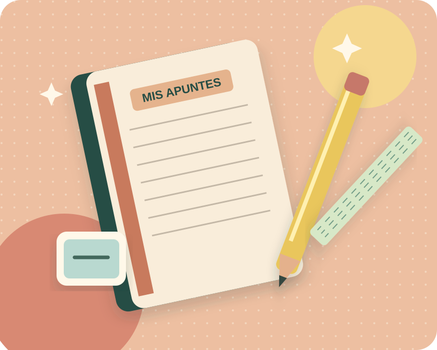

TU ESPACIO FAMILIAR
Hola, .
Selecciona un alumno para consultar su cuenta.

MIS ALUMNOS
2 estudiantesSus cuentas, en un solo lugar
ACTIVIDAD FAMILIAR
Últimos 5 movimientos
Actividad de los alumnos a tu cargo, del más reciente al más antiguo.